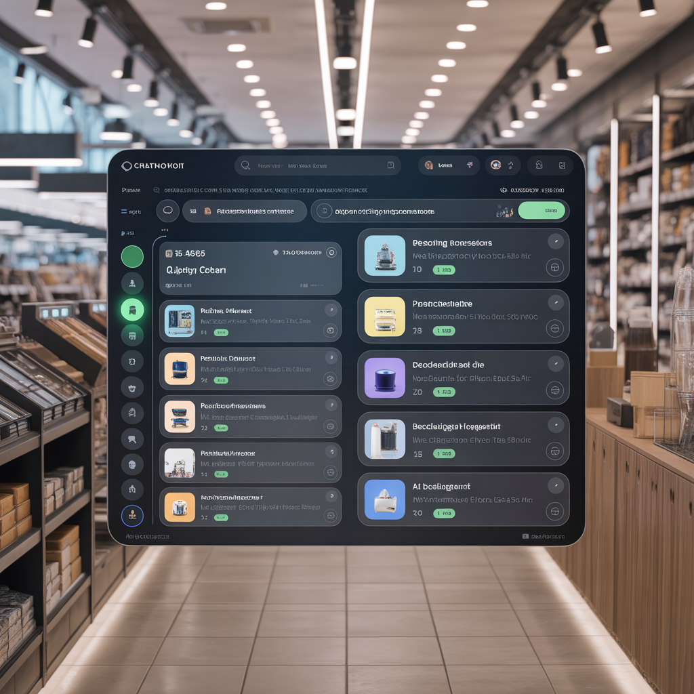

intelligence-core - ai agent builder - work automation
work automation
SISTAR AI Agent Builder, SIS-Work Automation (WA), AI Companions, Apps, and MCP/API Servers.
SISTAR's AI Agent Builder Service: A New Frontier in Business Automation for All
SISTAR's AI Agent Builder Service: A New Frontier in Business Automation for All
Democratizing artificial intelligence for businesses of all sizes through customized digital workforce solutions
Breaking Down Barriers to AI Adoption
Seoul, South Korea - In a move set to democratize artificial intelligence for businesses of all sizes, SISTAR is positioning itself to launch an AI Agent Builder service. This service is tailored for customers who are not AI experts, offering them the power to create a customized "digital workforce" without needing to write a single line of code. This initiative taps into a burgeoning market opportunity, simplifying complex technology into a tangible tool for business growth and efficiency.
For customers unfamiliar with the concept, an "AI Agent" can be thought of as a smart, automated assistant designed to perform specific tasks. Think of it as a highly efficient employee who can handle repetitive and time-consuming jobs, freeing up human staff to focus on more strategic and creative endeavors. SISTAR's service will guide customers through the process of defining these tasks and then build a reliable AI agent to execute them.
The Untapped Business Opportunity
85%
SME Market Gap
Small and medium enterprises lacking AI resources
300%
Projected Growth
Expected market expansion for AI agents
0
Code Required
Lines of code customers need to write
The market for AI agents is projected to grow exponentially, with a significant portion of this growth coming from small and medium-sized enterprises (SMEs). These businesses often lack the resources and technical expertise to develop their own AI solutions, creating a substantial market gap that SISTAR is perfectly positioned to fill.
The key prospective for SISTAR's AI-Agent Builder service lies in its accessibility. By offering a "done-for-you" service, SISTAR can cater to a vast, non-technical audience, providing them with the benefits of AI without the complexities of implementation.
How SISTAR's AI-Agent Builder Service Will Empower Customers
SISTAR's service will be a collaborative partnership, walking customers through a simple, yet powerful, creation process:
Identifying Opportunities
The first step will be to help customers pinpoint tasks within their daily operations that are ripe for automation. This could range from customer service inquiries and lead qualification to data entry and scheduling.
Customization and Training
Once a task is identified, SISTAR will build and train a dedicated AI agent. This involves feeding the agent with the customer's specific business information, such as product details, company policies, and customer data, ensuring the agent acts as a true extension of their brand.
Seamless Integration
The custom-built AI agent will then be seamlessly integrated into the customer's existing workflows and platforms, whether it's their website, social media channels, or internal communication tools.
Continuous Improvement
SISTAR will provide ongoing support and optimization, ensuring the AI agent learns and adapts over time to become even more efficient and effective.
Retail and E-commerce Solutions
For Retail and E-commerce:
An AI agent can act as a 24/7 sales assistant, answering product questions, providing personalized recommendations, and even processing orders.
24/7 customer support availability
Personalized product recommendations
Automated order processing
Inventory inquiries and updates
Customer preference tracking

Service-Based Business Automation
Appointment Management
For Service-Based Businesses: An agent can handle appointment scheduling, send reminders, and answer frequently asked questions, significantly reducing administrative overhead.
Automated scheduling
Reminder notifications
FAQ responses
Service availability updates
Marketing and Sales Enhancement
For Marketing and Sales Teams:
AI agents can be deployed to qualify leads, personalize outreach, and nurture potential customers through the sales funnel.
Transform your sales process with intelligent lead qualification and personalized customer nurturing
Lead qualification automation
Personalized outreach campaigns
Sales funnel optimization
Customer journey tracking
Internal Operations Streamlining
Employee Onboarding
For Internal Operations: Companies can use AI agents to onboard new employees, answer HR-related queries, and provide IT support.
HR Support
Automated responses to common HR questions, policy clarifications, and benefits information.
IT Assistance
First-level technical support, troubleshooting guides, and system status updates.
Comprehensive Use Case Overview
The potential applications for this service are vast and span across numerous industries:
Retail & E-commerce
24/7 sales assistance and order processing
Service Businesses
Scheduling and administrative automation
Marketing & Sales
Lead qualification and customer nurturing
Internal Operations
HR support and employee onboarding
The Future is Agent-Driven
By launching an AI-Agent Builder service, SISTAR is not just offering a new product; it is providing a gateway for its customers to enter the new era of business automation. This service has the potential to become a cornerstone of SISTAR's offerings, fostering long-term relationships with customers as their trusted partner in AI-powered transformation.
The prospective is clear: to empower every business with the ability to build their own digital workforce, driving growth and innovation in an increasingly competitive landscape.
Why AI-Driven Automation is Critical for Modern Business
The Current Challenge
Business leaders today face unprecedented pressure to optimize operations while managing rising labor costs and increasing complexity. Manual processes that once sustained growth now create bottlenecks, limiting scalability and competitive advantage.
Companies spending excessive time on repetitive tasks miss opportunities for strategic growth and innovation. The question isn't whether to automate, but how quickly you can implement the right solutions.
40%
Time Lost
Average time employees spend on repetitive tasks
67%
Efficiency Gain
Improvement with AI automation implementation
$2.3M
Annual Savings
Average cost reduction for mid-size companies
Our Comprehensive AI Automation Solutions
SIS-Work Automation delivers end-to-end intelligent automation that transforms how your organization operates. We don't just implement technology—we redesign workflows for maximum efficiency and scalability.
Process Automation
Intelligent workflow automation that handles complex business processes from start to finish, reducing manual intervention by up to 80%.
Document processing and routing
Data entry and validation
Approval workflows
Intelligent Analytics
AI-powered insights that turn your data into actionable intelligence, enabling faster decision-making and predictive capabilities.
Real-time performance dashboards
Predictive trend analysis
Automated reporting
System Integration
Seamless connection of existing systems with new AI capabilities, ensuring smooth operation without disrupting current workflows.
Legacy system modernization
API development and management
Cloud migration support
The SIS Advantage: Proven Implementation Process
Our systematic approach ensures successful automation deployment with minimal disruption to your operations. We partner with you every step of the way, from initial assessment to full-scale implementation and beyond.
Discovery & Assessment
Comprehensive analysis of your current processes, identifying automation opportunities and calculating potential ROI. We map existing workflows and pinpoint inefficiencies.
Custom Solution Design
Development of tailored automation strategies that align with your business objectives. Our architects design scalable solutions that grow with your organization.
Deployment & Integration
Seamless implementation with minimal operational disruption. Our certified engineers ensure smooth integration with existing systems and comprehensive staff training.
Optimization & Support
Ongoing monitoring, performance tuning, and continuous improvement. We provide 24/7 support and regular system enhancements to maximize your investment.
Results typically visible within 30 days - Our clients see measurable improvements in efficiency and cost savings within the first month of implementation.
Ready to Transform Your Operations?
Don't let manual processes hold your business back. SIS-Work Automation has helped over 200 companies achieve operational excellence through intelligent automation. Our proven solutions deliver measurable results that directly impact your bottom line.
Take the first step toward a more efficient, profitable future. Our automation specialists are ready to show you exactly how AI can transform your specific business processes.
"The automation solutions from SIS transformed our operations completely. We've cut processing time by 75% and reduced errors to nearly zero."
— Sarah Mitchell, Operations Director, TechCorp Industries
Contact us today: 1-800-SIS-AUTO | info@sisautomation.com
AI Companion Market Explodes as Technology Shifts from 'Tools' to 'Relationships'
AI Companion Market Explodes as Technology Shifts from 'Tools' to 'Relationships'
The era of the AI Companion has arrived, marking a significant evolution from task-oriented AI assistants to personalized, relational partners. This briefing outlines the current landscape and future trajectory of this burgeoning industry.
Fueled by advancements in generative AI, the market is at an inflection point, transitioning from providing simple information to fostering emotional connection and personalized experiences. This briefing, based on the "AI Companion Market Status and Outlook Report," outlines the current landscape and future trajectory of this burgeoning industry.
The initial reference to "[SISTAR Ai Companion]♦️" and creating "sub characters" points to a core theme in the market: the psychoanalytical journey of self-discovery through interaction with AI. Users are encouraged to define what they want to be, and through this interaction, find themselves. This aligns with the market's shift towards deep, personal engagement.
Overview: A New Paradigm of Human-AI Interaction
AI Companions are defined not merely as assistants that perform commands, but as intelligent entities that engage in continuous, interactive relationships with users. While predecessors like Siri and Alexa functioned primarily as "tools," the new generation of AI Companions embodies the concept of a "companion," fundamentally altering the human-computer relationship.
The rapid advancement and accessibility of Large Language Models (LLMs) have become the primary catalyst for this explosive market growth.
Current Market Trends: Technology and Key Players
The market's current momentum is driven by technological sophistication and the emergence of diverse services.
Technological Advancement
Advanced LLMs and on-device AI integration enabling 24/7 personalized experiences
Major Players
Platform-based companions, specialized apps, and hardware-based solutions
Service Models
Diverse approaches from emotional bonding to workplace assistance
1. Technological Advancement
Advanced LLMs
The proliferation of sophisticated LLMs, post-ChatGPT, enables AI to understand user context, remember past conversations, and engage in emotionally nuanced dialogue.
Rise of On-Device AI
The integration of AI directly into smartphone hardware, such as Samsung's 'Galaxy AI' and Apple's next-generation OS, allows for faster, more secure, and highly personalized experiences without constant network connectivity. This forms the technical backbone for a 24/7 companion.
2. Major Players and Service Models
1
Platform-Based Companions
Established AI assistants like Google Assistant and Apple's Siri are evolving into proactive companions by integrating LLMs. They are moving towards anticipating user needs based on learned habits, schedules, and communications. Microsoft's Copilot aims to be an indispensable partner in the workplace, learning a user's work style to provide optimal assistance.
2
Specialized Companion Apps
Services like Replika and Character.AI are leaders in the field, focusing specifically on forming emotional bonds and providing psychological satisfaction. They serve as confidants for users, helping to alleviate loneliness and offer a space for open conversation. Mental health and coaching apps are also leveraging this technology to provide support based on cognitive-behavioral therapy (CBT) and emotional state monitoring.
3
Hardware-Based Companions
A new wave of devices like the Humane AI Pin and Rabbit R1 seeks to replace the smartphone, offering an ever-present assistant that sees, hears, and remembers all user interactions. In parallel, social robots for elderly care and child education are incorporating AI companion technology to provide physical and emotional interaction.
Future Prospects: The Evolution Towards Proactive Digital Humans
The future of AI Companions is projected to be even more deeply integrated into users' lives.
1. Proactive and Hyper-Personalized Agents
The next generation of companions will not wait for commands. They will act as "proactive agents," anticipating needs and offering solutions. For instance, an AI might detect rising stress levels and suggest a meditation exercise or preemptively summarize relevant documents for an upcoming meeting.
2. The Rise of 'Digital Humans'
Companionship will transcend text and voice, evolving into visually realistic "digital humans." These entities will be capable of analyzing facial expressions and voice tones to understand and respond to user emotions, fostering deeper emotional bonds and offering potential solutions to societal issues like loneliness and an aging population.
3. Emergence of Specialized 'Vertical' Companions
Beyond general-purpose companions, the market will see a rise in highly specialized AIs for specific sectors:
Education
1:1 AI tutors that adapt to each student's learning pace and style.
Healthcare
AI health coaches that provide 24/7 monitoring and personalized advice based on real-time health data.
Finance
AI financial advisors that offer guidance based on an individual's financial status and investment preferences.
Key Challenges and Considerations
Despite the immense potential, the industry faces significant hurdles that require careful navigation.
Data Privacy and Security
As AI companions learn intimate details of a user's life, protecting this data is paramount. On-device processing is seen as a partial solution to this critical issue.
Ethical Dilemmas
The potential for excessive emotional dependency on AI, the risk of biased information, and the "hallucination" of false information are serious concerns. Societal consensus and clear regulations are needed to mitigate these risks.
Social Acceptance
Ongoing public discourse is necessary to determine how society will accept and integrate these advanced technologies into daily life.
Conclusion: A New Era Begins
In conclusion, the AI Companion market is at the dawn of a new era, shifting the focus of AI from 'information' to 'relationship' and 'experience.' The companies that successfully navigate the technological and ethical challenges will not only lead this transformative market but will also fundamentally reshape how we live and work.
The transformation from AI tools to AI companions represents one of the most significant shifts in human-computer interaction since the advent of personal computing.